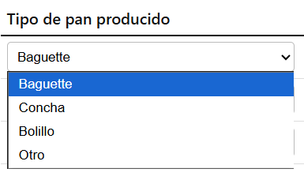
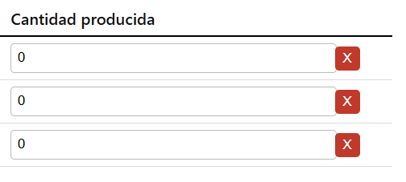
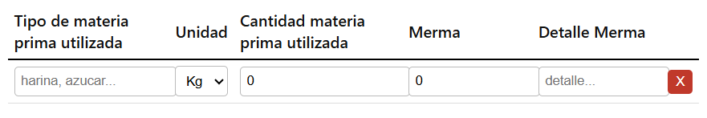
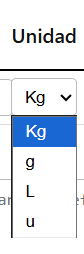

Esta es la vista principal
Diseñada para evitar confusiones en la hora de consulta de informacion, tener una navegacion agradable para el usuario, distribuida de tal forma que el usuario tenga una vista con mayor interaccion y no sea invasiva a la vista
Vista de inventario
Texto colocado a la izquierda de la pagina ocupando la mitad del total de pantalla, para una identificacion comoda para el usuario, utilizando colores claros y fuentes legibles para una mejor experiencia de usuario
Titulo: Colocado por encima de todo en letra grande para una identificacion correcta para el usuario
Fecha: Colocado en un recuadro de lado izquiero con la fecha actual en formato DD/MM/YYYY para una identificacion comun y comoda para el usuario
No de reporte: Colocado en un recuadro de lado izquierdo con el numero de reporte actual para entregar, bajo fecha para una correcta identificacion
Informacion: Boton colocado al final izquierda al nivel de fecha y numero de nota, con un color diferente para una correcta identificacion, asi poder enviar a esta hoja de informacion
Seccion produccion, colocada por debajo de la informacion principal para un llenado mas comodo hacia el usuario
Titulo: Colocado por encima de la tabla de llenado, para una mejor vista e identificacion
Agregar fila (produccion): Boton colocado por debajo de titulo y encima de campos de llenado para un comodo acceso, destacado de un color diferente para agregar una fila nueva en la tabla de llenado
Seleccion: Campo de seleccion para un mejor acceso al usuario y evitar errores, facilitando el llenado
Campo cantidad: Campo de llenado colocado al nivel de fila de cada pan seleccionado asi teniendo conexion de informacion, para estipular la cantidad producida de cada pan
Cruz: cruz colocada al final de la fila de la informacion a llenar, destacada de un color rojo, para eliminar la fila correspondiente
Seccion produccion, colocada por debajo de la informacion principal para un llenado mas comodo hacia el usuario
Titulo: Colocado por encima de la tabla de llenado, para una mejor vista e identificacion
Agregar fila (Materia): Boton colocado por debajo de titulo y encima de campos de llenado para un comodo acceso, destacado de un color diferente para agregar una fila nueva en la tabla de llenado
Seccion Materia, colocada por debajo de la informacion produccion para un llenado mas comodo hacia el usuario
Tipo de materia prima utilizada: Campo de llenado libre al inicio de la fila para una mejor identificacion para estipular el tipo de materia prima que se utilizo para produccion
Cantidad: Campo de llenado colocado al nivel de fila de cada materia prima para estipular la cantidad utilizada en produccion
Merma: Campo de llenado colocado al nivel de fila de cada materia prima para estipular la merma de la materia prima
Detalle merma: Campo de llenado libre colocado al nivel de fila de cada materia prima para estipular el detalle de la merma
Cruz: cruz colocada al final de la fila de la informacion a llenar, destacada de un color rojo, para eliminar la fila correspondiente
Unidad: Campo seleccionable para un acceso mas comodo hacia el usuario, colocado el nivel fila del tipo de materia prima que se esta generando informe
Seccion Alertas, colocada por debajo de la informacion Materia para un llenado mas comodo hacia el usuario
Titulo: Colocado por encima del campo de llenado, para una mejor vista e identificacion
Campo de llenado: Campo de llenado libre para una mejor identificacion y acceso hacia el usuario, para estipular las alertas que se presentaron durante la produccion
Enviar Alerta: Boton colocado bajo el campo de llenado al inicio de lado izquierdo, para un acceso mas comodo al usuario, destacado en un color diferente para el envio de la alerta generada
Limpiar: Boton colocado al nivel de Enviar seguido del mismo para un acceso comodo, limpiando el campo si tiene texto escrito
Boton Generar Reporte (incrementar No.): Boton colocado al final del llenado para un mejor acceso al usuario destacada de un color diferente para una mejor identificacion, destinado para generar el reporte y aumentar el numero de repoerte
Imprimir: Boton colocado en la barra de herramientas para un acceso comodo destinado para imprimir el reporte actual que se esta llenando
Cerrar Sesion: Booton para cerrar la sesion actual, colocado al final de la parte de izquierda asi teniendo una navegacion final del usuario